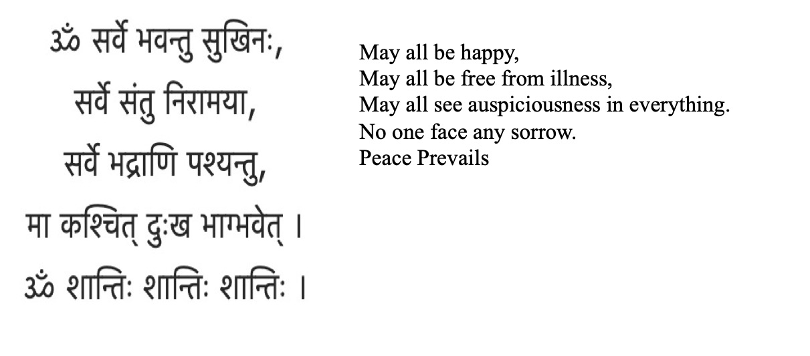

Namita Bansal
EDUC 400 Portfolio
I am privileged to reside, work and play on the unsurrendered and unceded traditional territories of Coast Salish People which include Katzie, Tsawwassen, Stó:lō, Wsáneć and Kwantlen People.
I am thankful to this land because it gives me opportunity to make connections and build a home away from my ancestral home. I wish well for all living being.

EDUC 400 Portfolio
I am Namita a PDP student at Simon Fraser University. I am born and raised in India, immigrated to Canada in year 2000 with my husband and two young children. With nothing much to do at home, I started volunteering in my elder son’s kindergarten classroom to keep myself busy. This opportunity opened many venues for me to establish new connections in a foreign land. I completed the Para Educator program and started working as an Education Assistant. Over the years, I grew as an educator, acquired many skills to work with students while encouraging their independence. Teacher assistant role has been challenging, rewarding and at times, frustrating because of its limited job profile. I felt the need to move on into a broader role to fulfill my potential as an educator. The recent shift in education towards student centered approach, project-based experiential learning, and introduction of social emotional strategies in school curriculum enabled me to move forward in my own journey of career development. Beside working with children, I enjoy being outdoors and travelling.
Though my formal schooling happened in India, I have the same lived experience as most of you have in Canadian education system. I believed in one-sided stories, anecdotal evidence, and mainstream ideologies without questioning. Educ#400 course activities, readings and webinars made me realize that I am the product of this system. I have bounced back between yielding advantages and facing hardships because of my position in context. Conveniently, I criticized the short comings of present school system without engaging in any inquiry.
Throughout this semester, my believes and biases were challenged. To me, schooling and learning was the same, indigenous communities represented the rich heritage culture of Canada, inclusive education was providing equitable sources to people with different clinical diagnosis. My perception of ecological justice was limited to global warming and environmental activism. Similarly, I never thought of the trauma, fear, and day to day challenges faced by LGBQ2+ people and how it affected their wellbeing and lives. It is here, that I learned more about these issues, and dismantled my own assumptions. This e-portfolio exhibits my learning, growth, and engagement with course contents.


Dry leaves and pinecones, I collected in the pouring rain from the ground as I revisited the park to reflect on my relationship with the land and my ways to look at nature. I had many ideas to do the art-based project, which required glue, scissors, wire, or tape. I limited myself to use only one thing (twine) other than collected material. Suddenly, things became challenging. Leaves were wet, so I put them to dry. They curled up. I thought I can make a mobile. I tied them together with twine. Cones were fine but leaves were fragile. I was not able to string them how I wanted to. I end up putting pinecones at the bottom and inserting other leaves into it. I cut the twine with sharp edged rock, not with scissors and not used my teeth (I wanted to). I created a tree. I imagined myself in the hot tropical island and now tree resembled with a palm tree. Every time I rearranged the bunch of leaves, I saw something different. I was happy, relaxed, not worried about the outcome and most of all, I had fun.
Nature expands our imagination.


 As a society we assume that people with disability cannot overcome with their challenges. Apart from the bodily limitations and diagnosis, people with disability are real people, they deserve to be treated who they are. I want to move forward in my educational journey with Stella’s words, “I want to live in a world where disability is not the exception, but the norm… where we don’t have such low expectations of disabled people”. Every individual needs to be valued for their work and intelligence. When things are valued, they become a source of strength to that person. Over caring serves passively in the process of learning by their own efforts (Malaguzzi, L., P.2).
Deficit based approach and ableism perspective restricts us to accept individuals as who they are. Allocation of resources and funding further divide the gap between labelled and non-labelled students. Apart from physical and cognitive disabilities our education system labels students based on their competencies in English and French languages.
As a society we assume that people with disability cannot overcome with their challenges. Apart from the bodily limitations and diagnosis, people with disability are real people, they deserve to be treated who they are. I want to move forward in my educational journey with Stella’s words, “I want to live in a world where disability is not the exception, but the norm… where we don’t have such low expectations of disabled people”. Every individual needs to be valued for their work and intelligence. When things are valued, they become a source of strength to that person. Over caring serves passively in the process of learning by their own efforts (Malaguzzi, L., P.2).
Deficit based approach and ableism perspective restricts us to accept individuals as who they are. Allocation of resources and funding further divide the gap between labelled and non-labelled students. Apart from physical and cognitive disabilities our education system labels students based on their competencies in English and French languages.